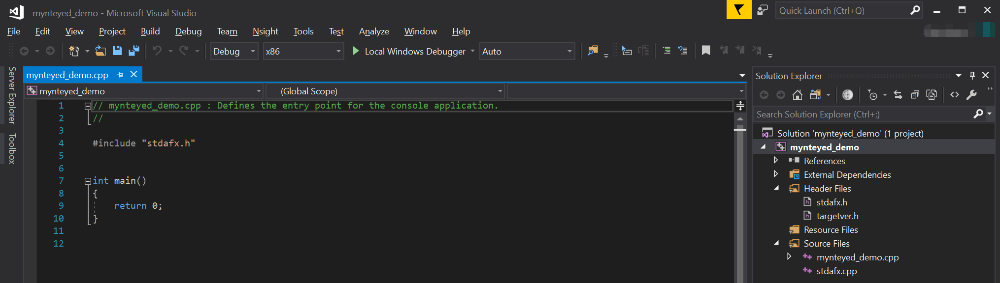

Visual Studio 2017 如何使用 SDK¶
本教程将使用 Visual Studio 2017 创建一个项目来使用 SDK 。
你可以在
<sdk>/platforms/projects/vs2017目录下找到工程样例。
准备¶
Windows: 安装 SDK 的 exe 包
创建项目¶
打开 Visual Studio 2017 ，然后 File > New > Project，
选择 “Windows Console Application” ，设置项目位置和名字，点击 “OK”，

最后，你可以看到一个新的项目被创建，
配置项目¶
右键点击该项目， 打开 “Properties” 窗口，
将 “Configuration” 更改为 “All Configurations” ，然后添加以下路径到 “Additional Include Directories” ，
$(MYNTEYED_SDK_ROOT)\include
$(MYNTEYED_SDK_ROOT)\3rdparty\opencv\build\include

添加以下定义到 “Preprocessor Definitions”,
WITH_OPENCV
WITH_OPENCV3
添加以下路径到 “Additional Library Directories” ，
$(MYNTEYED_SDK_ROOT)\lib
$(MYNTEYED_SDK_ROOT)\3rdparty\opencv\build\x64\vc15\lib

添加以下库到 “Additional Dependencies” ，
mynteye_depth.lib
opencv_world343.lib